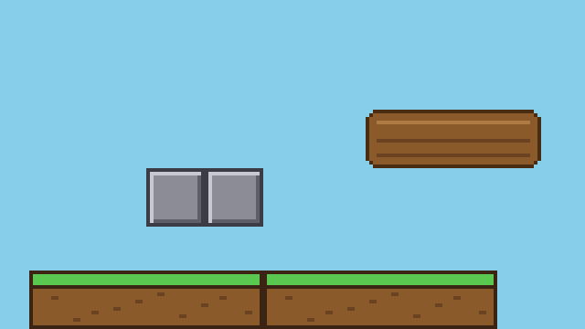
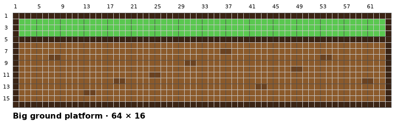
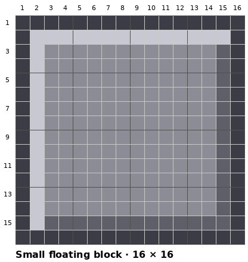

Three Platforms for a Platformer
Your first Piskel lesson. Draw three platforms a game character can stand on: a long grassy ground strip, a small floating stone block, and a round log. No animation, just shapes, fills and a few lines.
What you will build
Three separate pictures (PNG files), each a different size. Here they are together in a game scene:

| Platform | Size | Style |
|---|---|---|
| Big ground platform | 64 × 16 pixels | Grass on top, dirt underneath. Place several side by side to make a long floor. |
| Small floating block | 16 × 16 pixels | A grey stone square with a light top edge and a dark bottom edge, so it looks raised. |
| Log platform | 48 × 16 pixels | Rounded ends and bark lines, with a light stripe on top so it looks round, like a cylinder lying down. |
| Tool | What it is for | Link |
|---|---|---|
| Piskel | Drawing the platforms and saving them as pictures | piskelapp.com |
- Piskel is free and runs in the browser. Nothing needs installing and you do not need an account.
- The address is piskelapp.com, not piskel.com.
- You hardly draw pixel by pixel. Most of the work is three tools: Rectangle for the outline, Paint bucket to fill it, and Stroke for straight lines.
- Your colours do not have to match. Make the grass purple or the stone gold if you like, as long as you keep the sizes.
- Time: about one class period.
- Click a part to open it. Opening one part closes the others. Tick every checkpoint box before you move on; your ticks are remembered on this computer.
Lesson brief
If you already know Piskel, follow the chart and you can finish from it alone. Click any box to jump to its full steps; the Back to the brief button brings you back here.
Part 1 · Open Piskel
Create Sprite
64 × 16 px · Toggle grid on
Part 2 · Big ground platform
Whole canvas, corner to corner
Across from side to side
Grass #5AC850 · Dirt #8B5A2B
2-pixel specks in the dirt
Export → PNG → Download
Part 3 · Small floating block
Resize 16 × 16
Bucket #8C8C96
dark #5F5F69 bottom + right
block.png
Part 4 · Log platform
Resize 48 × 16
Erase 3 px per corner, add 1 inside
rows 9 + 13 #6B4220
log.png
Part 5 · Hand in
3 .piskel + 3 .png
Each colour is one part. Codes like 2B mean Part 2, section B. Underlined words are links. Codes like #5AC850 are colours. Row and column numbers count from 1, matching the numbers on the picture grids.
Part 1 · Open Piskel
You start with an empty, long, flat canvas (64 pixels wide, 16 tall) with a grid on it, ready for the ground platform.
| Where things are in Piskel | Location on screen |
|---|---|
| Tools (Pen, Paint bucket, Eraser, Stroke, Rectangle…) | Far left, two columns of icons |
| Pen size (four small squares) | Far left, just above the tools |
| Colour squares (primary and secondary) | Far left, under the tools |
| Canvas (where you draw) | Middle of the screen |
| Preview window and Toggle grid button | Top-right corner |
| Resize, Save, Export, Import buttons | A strip of icons down the far right edge |
Hold your mouse over any icon and its name pops up. Piskel has no hidden panels to lose; if the screen looks squashed, make the browser window full screen.
1A · New sprite
- Go to piskelapp.com.
- Click Create Sprite. The editor opens with a blank square canvas in the middle.
1B · Canvas size and grid
| Resize | Value |
|---|---|
| Width | 64 px |
| Height | 16 px |
| Maintain aspect ratio | Unticked |
- Click the Resize icon (top of the strip on the far right edge). A panel slides out showing Width, Height and two tick boxes.
- Click Maintain aspect ratio to untick it. While it is ticked, Piskel keeps the canvas square and changes the Height whenever you change the Width.
- Type 64 in Width and 16 in Height, then click the Resize button at the bottom of the panel. The canvas becomes a long, flat strip.
- Click the Resize icon again to close the panel.
- Above the Preview window (top-right corner), click the Toggle grid button. Thin lines appear on the canvas, one square per pixel.
- Scroll the mouse wheel over the canvas to zoom in until the strip fills the middle of the screen.
Part 2 · Big ground platform
A dark brown box, a line to split off the grass, two fills, and some specks of dirt.


| Part of the platform | Colour code |
|---|---|
| Outline and grass line | #3B2414 (very dark brown) |
| Grass | #5AC850 (green) |
| Dirt | #8B5A2B (brown) |
| Specks | #6B4220 (darker brown) |
How to pick a colour: click the big primary colour square (far left, under the tools). A colour chooser opens. Click in the text box at the bottom, delete what is there, type the colour code (for example #3B2414) and press Enter, then click back on the canvas to close the chooser. The primary square changes to that colour.
2A · Outline
- Check the Pen size (four squares above the tools) is set to the smallest square, 1 pixel. The Rectangle and Stroke tools use this size too.
- Pick the outline colour #3B2414.
- Choose the Rectangle tool (an empty square icon in the tools; hover to check its name).
- Press the mouse button on the top-left square of the canvas, drag to the bottom-right square, and let go. A dark brown box appears all the way around the edge of the canvas.
2B · Grass line
- Keep #3B2414. Choose the Stroke tool (a slanted line icon).
- Find row 5 using the numbers down the left of the picture grid above (4 rows down from the top edge is grass).
- Press on the left outline at row 5, drag straight across to the right outline at row 5, and let go. A dark line now splits the strip into a thin top band and a thick bottom band.
2C · Fill the grass and dirt
- Pick #5AC850 and choose the Paint bucket tool (the tipping paint can).
- Click anywhere inside the thin top band. It all turns green.
- Pick #8B5A2B and click inside the thick bottom band. It all turns brown.
- If a colour spills out over the whole background, there is a gap in the outline. Press Ctrl+Z, find the gap, and close it with the Pen tool (top of the tools).
2D · Dirt specks
- Pick #6B4220 and choose the Pen tool.
- Click two side-by-side pixels in the dirt to make one speck. Make about 10 specks, spread out, at different heights. They do not need to match the picture.
- Made a mistake? Right-click a pixel with the Pen to erase it, then put the brown back with the Paint bucket.
2E · Save and export
You make two files for each platform: a .piskel file so you can keep editing later, and a .png picture for the game.
- Click the Save icon (strip on the far right edge, under Resize). A panel slides out.
- Delete what is in Title and type ground.
- Click Save offline as File. A file called ground.piskel downloads (check your Downloads folder).
- Click the Export icon (far right edge, under Save). A panel slides out with tabs along the top: GIF, PNG, Zip, Others.
- Click the PNG tab, then under Spritesheet file export click Download. A file called ground.png downloads. Open it to check: it is your platform, small and sharp.
- Click the Export icon again to close the panel. Leave this tab open.
Part 3 · Small floating block
A small stone square. A light line on the top and left and a dark line on the bottom and right make it look like it sticks out, as if light is shining from the top-left.


| Part of the block | Colour code |
|---|---|
| Outline | #3C3C46 (very dark grey) |
| Stone | #8C8C96 (grey) |
| Light edge (top and left) | #C8C8D2 (light grey) |
| Dark edge (bottom and right) | #5F5F69 (dark grey) |
3A · New sprite, 16 × 16
- Open a new browser tab (Ctrl+T) and go to piskelapp.com. Click Create Sprite.
- Click the Resize icon. Check Maintain aspect ratio is still unticked (Piskel remembers it). Type 16 in Width and 16 in Height and click Resize. Close the panel.
- Turn on Toggle grid and zoom in until the square fills the middle of the screen.
3B · Outline and fill
- Pick #3C3C46, choose the Rectangle tool, and drag from the top-left square to the bottom-right square. A dark box appears around the edge.
- Pick #8C8C96, choose the Paint bucket, and click inside the box. It fills grey.
3C · Light and dark edges
All four lines go just inside the outline, on the first ring of grey pixels.
- Pick #C8C8D2 and choose the Stroke tool.
- Top: drag along row 2 from column 2 to column 15.
- Left: drag down column 2 from row 2 to row 15.
- Pick #5F5F69.
- Bottom: drag along row 15 from column 3 to column 15.
- Right: drag up column 15 from row 15 to row 3.
3D · Save and export
Same steps as 2E, with the name block:
- Save icon → Title block → Save offline as File. You get block.piskel.
- Export icon → PNG tab → Download under Spritesheet file export. You get block.png.
Part 4 · Log platform
A log is a cylinder lying on its side. Rounded ends and a light stripe near the top make a flat drawing look round.


| Part of the log | Colour code |
|---|---|
| Outline | #4A2C12 (very dark brown) |
| Bark | #8B5A2B (brown) |
| Light stripe | #B07A45 (light brown) |
| Bark lines | #6B4220 (darker brown) |
4A · New sprite, 48 × 16
- Open a new browser tab, go to piskelapp.com and click Create Sprite.
- Resize to 48 wide and 16 high (Maintain aspect ratio unticked). Close the panel.
- Turn on Toggle grid and zoom in.
4B · Outline and round ends
- Pick #4A2C12, choose the Rectangle tool, and drag from the top-left square to the bottom-right square.
- Choose the Eraser tool (hover the tools to find it). At the top-left corner, click 3 pixels to erase them: the corner pixel, the one to its right, and the one below it. The corner now has a small notch.
- Choose the Pen tool and click the pixel diagonally inside the notch (row 2, column 2). The corner is now rounded.
- Do the same at the other three corners. The pixels to add with the Pen are row 2 column 47, row 15 column 2, and row 15 column 47. Use the picture grid to check.
4C · Fill and bark lines
- Pick #8B5A2B, choose the Paint bucket, and click inside the log. If the colour spills outside, a rounded corner has a gap: press Ctrl+Z and check that corner against the picture.
- Pick #B07A45, choose the Stroke tool, and drag along row 4 from column 4 to column 45. This is the light shining on the top of the log.
- Pick #6B4220 and drag two more lines, from column 4 to column 45: one on row 9 and one on row 13. These are the bark lines.
4D · Save and export
- Save icon → Title log → Save offline as File. You get log.piskel.
- Export icon → PNG tab → Download under Spritesheet file export. You get log.png.
Part 5 · Hand in
5A · Hand in
- Upload all six files to Google Classroom: ground.piskel, ground.png, block.piskel, block.png, log.piskel and log.png.
- Keep going another day: go to piskelapp.com, click Create Sprite, click the Import icon (far right edge) and open one of your .piskel files.
- Next: in Construct 3, drag a PNG from your Downloads folder straight onto the layout. It becomes a sprite you can give the Solid behaviour, so your character can stand on it.